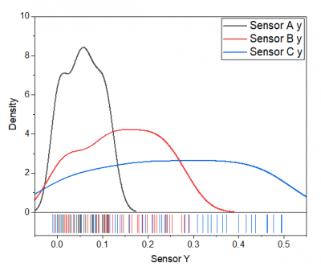

Histogramm + Rug/Verteilungsdiagramm + Rug
HistogramRug-Graph
|
Histogramm + Rug
|
Verteilung + Rug
|
 |
 |
Datenanforderungen
Markieren Sie eine oder mehrere Y-Spalten (oder einen Bereich aus einer oder mehreren Y-Spalten).
Diagramm erstellen
- Wählen Sie die gewünschten Daten aus.
- Wählen Sie im Menü .
Vorlage
Histogramm + Rug: HistogramRug.otp (installiert im Origin-Programmordner) Verteilung + Rug: DensityRug.otp (installiert im Origin-Programmordner)
Hinweise
- Die Grundidee der Rugs besteht darin, die Datenpunkte auf die Achsen zu projizieren und sie als dünne Linien neben den Achsen darzustellen.
- Diese Darstellung der Rugs ist kein Dichtediagramm. Sie projiziert nur jeden Punkt mit einer dünnen Linie auf die Achsen. Daher gibt es keine Bandbreite in der Darstellung der Rugs.
- Wenn die XY-Richtung duplizierte Werte hat, überschneiden sich die Ruglinien.
- Sie können doppelt auf das Rugfeld klicken, um die Registerkarte Rug im Dialog Achsen zu öffnen und die detaillierten Einstellungen für diese Art von Diagrammen zu prüfen.